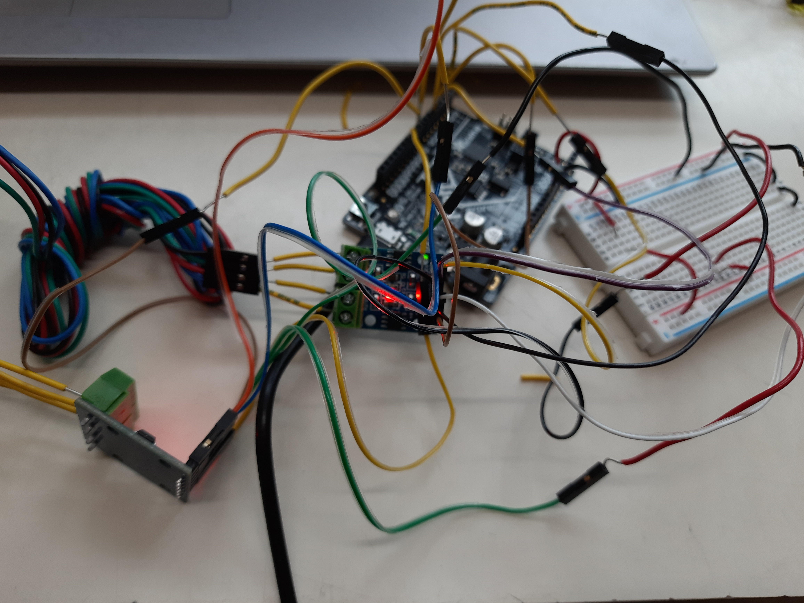

Electronic Output Devices
Output Devices, Buzzers, LED Strips
OUTPUT DEVICES
This class was about electronic Output Devices. The class reading today was fairly simple - it was about different output devices including LED's, Laser Pointers, DC Motors, Stepper Motors, Servomoters and much more. Today we focussed more on Sound production using a buzzer.
Here is a link to the class reading on Output Devices.
Buzzers
This is a link to the Buzzer tutorial.
The very first thing I did was followed the simple tutorial given on the page. My buzzer worked perfectly well.
My 3 key takeaways from this tutorial were as follows:
- The tone() function uses one of the built in timers on the Arduino’s microcontoller. tone() works independently of the delay() function. You can start a tone and do other stuff – while the tone is playing in the background. Therefore, if you use 500 milliseconds as the third argument in tone(), and follow that by a delay of 1000 milliseconds, you will only be creating a “rest” of 500 milliseconds.
- You cannot generate a tone lower than 31 HZ. You can pass values 31 and less to the tone() function, but it doesn’t mean you will get a good representation of it.
- The tone() function cannot be used by two separate pins at the same time. Let’s say you have two separate piezo speakers, each on a different pin. You can’t have them both play at the same time. One has to be on, and then the other. Furthermore, before you can have the other pin use the tone() function, you must call the noTone() function and “turn off” the tone from the previous pin.
After learning about these, I tried to incorporate the Hedwig Theme Song in the Buzzer, just because I'm a harry Potter Fan. Given below is my Arduino Code:
/*
Hedwig's theme - Harry Potter
Connect a piezo buzzer or speaker to pin 11 or select a new pin.
More songs available at https://github.com/robsoncouto/arduino-songs
Robson Couto, 2019
*/
#define NOTE_B0 31
#define NOTE_C1 33
#define NOTE_CS1 35
#define NOTE_D1 37
#define NOTE_DS1 39
#define NOTE_E1 41
#define NOTE_F1 44
#define NOTE_FS1 46
#define NOTE_G1 49
#define NOTE_GS1 52
#define NOTE_A1 55
#define NOTE_AS1 58
#define NOTE_B1 62
#define NOTE_C2 65
#define NOTE_CS2 69
#define NOTE_D2 73
#define NOTE_DS2 78
#define NOTE_E2 82
#define NOTE_F2 87
#define NOTE_FS2 93
#define NOTE_G2 98
#define NOTE_GS2 104
#define NOTE_A2 110
#define NOTE_AS2 117
#define NOTE_B2 123
#define NOTE_C3 131
#define NOTE_CS3 139
#define NOTE_D3 147
#define NOTE_DS3 156
#define NOTE_E3 165
#define NOTE_F3 175
#define NOTE_FS3 185
#define NOTE_G3 196
#define NOTE_GS3 208
#define NOTE_A3 220
#define NOTE_AS3 233
#define NOTE_B3 247
#define NOTE_C4 262
#define NOTE_CS4 277
#define NOTE_D4 294
#define NOTE_DS4 311
#define NOTE_E4 330
#define NOTE_F4 349
#define NOTE_FS4 370
#define NOTE_G4 392
#define NOTE_GS4 415
#define NOTE_A4 440
#define NOTE_AS4 466
#define NOTE_B4 494
#define NOTE_C5 523
#define NOTE_CS5 554
#define NOTE_D5 587
#define NOTE_DS5 622
#define NOTE_E5 659
#define NOTE_F5 698
#define NOTE_FS5 740
#define NOTE_G5 784
#define NOTE_GS5 831
#define NOTE_A5 880
#define NOTE_AS5 932
#define NOTE_B5 988
#define NOTE_C6 1047
#define NOTE_CS6 1109
#define NOTE_D6 1175
#define NOTE_DS6 1245
#define NOTE_E6 1319
#define NOTE_F6 1397
#define NOTE_FS6 1480
#define NOTE_G6 1568
#define NOTE_GS6 1661
#define NOTE_A6 1760
#define NOTE_AS6 1865
#define NOTE_B6 1976
#define NOTE_C7 2093
#define NOTE_CS7 2217
#define NOTE_D7 2349
#define NOTE_DS7 2489
#define NOTE_E7 2637
#define NOTE_F7 2794
#define NOTE_FS7 2960
#define NOTE_G7 3136
#define NOTE_GS7 3322
#define NOTE_A7 3520
#define NOTE_AS7 3729
#define NOTE_B7 3951
#define NOTE_C8 4186
#define NOTE_CS8 4435
#define NOTE_D8 4699
#define NOTE_DS8 4978
#define REST 0
// change this to make the song slower or faster
int tempo = 144;
// change this to whichever pin you want to use
int buzzer = 10;
// notes of the moledy followed by the duration.
// a 4 means a quarter note, 8 an eighteenth , 16 sixteenth, so on
// !!negative numbers are used to represent dotted notes,
// so -4 means a dotted quarter note, that is, a quarter plus an eighteenth!!
int melody[] = {
// Hedwig's theme fromn the Harry Potter Movies
// Socre from https://musescore.com/user/3811306/scores/4906610
REST, 2, NOTE_D4, 4,
NOTE_G4, -4, NOTE_AS4, 8, NOTE_A4, 4,
NOTE_G4, 2, NOTE_D5, 4,
NOTE_C5, -2,
NOTE_A4, -2,
NOTE_G4, -4, NOTE_AS4, 8, NOTE_A4, 4,
NOTE_F4, 2, NOTE_GS4, 4,
NOTE_D4, -1,
NOTE_D4, 4,
NOTE_G4, -4, NOTE_AS4, 8, NOTE_A4, 4, //10
NOTE_G4, 2, NOTE_D5, 4,
NOTE_F5, 2, NOTE_E5, 4,
NOTE_DS5, 2, NOTE_B4, 4,
NOTE_DS5, -4, NOTE_D5, 8, NOTE_CS5, 4,
NOTE_CS4, 2, NOTE_B4, 4,
NOTE_G4, -1,
NOTE_AS4, 4,
NOTE_D5, 2, NOTE_AS4, 4,//18
NOTE_D5, 2, NOTE_AS4, 4,
NOTE_DS5, 2, NOTE_D5, 4,
NOTE_CS5, 2, NOTE_A4, 4,
NOTE_AS4, -4, NOTE_D5, 8, NOTE_CS5, 4,
NOTE_CS4, 2, NOTE_D4, 4,
NOTE_D5, -1,
REST,4, NOTE_AS4,4,
NOTE_D5, 2, NOTE_AS4, 4,//26
NOTE_D5, 2, NOTE_AS4, 4,
NOTE_F5, 2, NOTE_E5, 4,
NOTE_DS5, 2, NOTE_B4, 4,
NOTE_DS5, -4, NOTE_D5, 8, NOTE_CS5, 4,
NOTE_CS4, 2, NOTE_AS4, 4,
NOTE_G4, -1,
};
// sizeof gives the number of bytes, each int value is composed of two bytes (16 bits)
// there are two values per note (pitch and duration), so for each note there are four bytes
int notes = sizeof(melody) / sizeof(melody[0]) / 2;
// this calculates the duration of a whole note in ms (60s/tempo)*4 beats
int wholenote = (60000 * 4) / tempo;
int divider = 0, noteDuration = 0;
void setup() {
// iterate over the notes of the melody.
// Remember, the array is twice the number of notes (notes + durations)
for (int thisNote = 0; thisNote < notes * 2; thisNote = thisNote + 2) {
// calculates the duration of each note
divider = melody[thisNote + 1];
if (divider > 0) {
// regular note, just proceed
noteDuration = (wholenote) / divider;
} else if (divider < 0) {
// dotted notes are represented with negative durations!!
noteDuration = (wholenote) / abs(divider);
noteDuration *= 1.5; // increases the duration in half for dotted notes
}
// we only play the note for 90% of the duration, leaving 10% as a pause
tone(buzzer, melody[thisNote], noteDuration*0.9);
// Wait for the specief duration before playing the next note.
delay(noteDuration);
// stop the waveform generation before the next note.
noTone(buzzer);
}
}
void loop() {
// no need to repeat the melody.
}
Here is a video of my result:
During the class, I played with the buzzer by programming it with a few different tones. I also learnt that the range of these tones are from 32 to 2000. I ended up playing the higher value tones all day to annoy my folks but this was a fun activity.
LED STRIP
In breakout rooms, we were also assigned the task of lighting the first four LED's of the LED Strip using different colours. Although I could not alter the LED strip according to different colours due to paucity of time, I did manage to make my LED strip work with my Arduino. Here is my end result:
SERVO MOTORS
This was a fun tutorial as I was excited to explore Servo motors. Here is a link to the tutorial on Servo motors.
I followed all tutorials but the most interesting one was controlling the servo motor using a potentiometer. Here is the code for the same:
#include <Servo.h>
Servo myservo; // create servo object to control a servo
int potpin = A0; // analog pin used to connect the potentiometer
int val; // variable to read the value from the analog pin
void setup() {
myservo.attach(9); // attaches the servo on pin 9 to the servo object
}
void loop() {
val = analogRead(potpin); // reads the value of the potentiometer (value between 0 and 1023)
val = map(val, 0, 1023, 0, 180); // scale it to use it with the servo (value between 0 and 180)
myservo.write(val); // sets the servo position according to the scaled value
delay(15); // waits for the servo to get there
}
Here is a video documenting my end result:
STEPPER MOTOR
The first striking difference I noticed between a servo motor and a stepper motor was that in the servo motor, we could control the angle of rotation wheras in a stepper motor, we control the number of steps. This was a little challenging only because there were too many wires and I always ended up connecting the wrong pins. However, after putting in some effort I mannaged to run two stepper motors simultaneously. This was my end product:
Here is an image of my wiring:

Readings & Documentation
We has four readings this week:
Reading 1: Serial Communication
This was a very resourceful article on serial communications and Common Pitfalls. I undoubtedly learnt a lot about wiring and hardware implementation in my circuits.
Reading 2: Serial Peripheral Interface
This article was particularly very useful to me as my Final Project was to involve SPI vividly. Serial Peripheral Interface (SPI) is an interface bus commonly used to send data between microcontrollers and small peripherals such as shift registers, sensors, and SD cards. It uses separate clock and data lines, along with a select line to choose the device you wish to talk to. It provided me with an ideal solution to my problem.
Reading 3: I2C Communication Portal
I2C works on the master-slave principle that requires just two wires like an asynchronous serial. It offers the best of two worlds - SPI and UART Ports.
Reading 4: Working of Wireless Module and Interface with Arduino
This reading gave me an ideal case where I could help communicate between two or more arduinos in the most effective, inexpensive way. This could create new openings for my Final Project, however I could not find this part online and hence I had to work without it.
Assignment: Output Devices
Output Devices: Exploration
For this assignment, I chose to work with stepper motors, disconsidering the fact that it was a very tedious job. Infact, the stepper motor video attached earlier in this page was my exploration and not the tutorial. The tutorial, on the other hand was fairly simple.This was a little complicated because I was trying to run two stepper motors together and I wanted them to run like the wheels of a car. The only problem I faced was I was using the delay() function which made one stepper motor run first followed by the other. After a lot of thinling, I thought that if I reduce the stepper count to smaller values, it would seem as though both motors were running together. I did so and I was satisfied with my end result, shown in the video above.